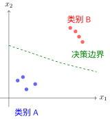

Learning Task Formulations#
The computational graph introduced in Computational graph describes how data flows through a model. But toward what objective does the data flow? Different types of “patterns” require different mathematical modeling approaches.
What Patterns Does Machine Learning Look For?#
The essence of machine learning is to discover patterns from data and then use these patterns to make predictions [Bis06]. However, “patterns” come in different forms:
Pattern Type |
Core Question |
Example |
|---|---|---|
Category Boundaries |
What common features do things of this type share? |
Classifying cats and dogs |
Numerical Mappings |
What is the relationship between input and output? |
Predicting house prices based on area |
Sequence Dependencies |
What should come next? |
Completing a sentence |
These three pattern types correspond to three task formulations: classification, regression, and autoregression. They share the same computational mechanism in the Computational graph, but their target mathematical formulations are distinctly different.
Classification Tasks: Discovering Category Boundary Patterns#
Imagine teaching a child to recognize animals. Instead of showing them a checklist, you point at a picture and say, “This one has four legs, fur, and barks, so it’s a dog.”
Essence of Classification: Finding the boundary that separates different categories—class A on one side, class B on the other.
In feature space, each sample is a point, and classification is drawing a decision boundary that partitions the space:

Decision Boundary in Classification Tasks
Key Insights:
Samples of the same class cluster on one side of the boundary
Boundaries are “soft” (probabilistic) rather than rigid hard cuts
A new sample is predicted as whichever class its location falls into
Mathematical Formulation: A classification model outputs a class probability distribution \(p(y=k|x)\), where \(k \in \{1, 2, ..., K\}\). The decision rule selects the class with maximum probability:
The decision boundary lies where two class probabilities are equal: \(p(y=i|x) = p(y=j|x)\).
The non-linear activation functions discussed in Activation Functions exist precisely to enable neural networks to learn non-linear decision boundaries. Without non-linear activations, no matter how many layers a network has, it can only learn linear boundaries.
Regression Tasks: Discovering Numerical Mapping Patterns#
Imagine conducting a physics experiment measuring spring extension under different pulling forces. You observe that “the greater the force, the longer the extension.” This is not a classification problem—you are not sorting force into “large” or “small” categories, but finding a precise numerical relationship.
Essence of Regression: Learning a functional mapping that takes numerical inputs and produces numerical outputs.
The simplest form of regression is linear regression, assuming a straight-line relationship between input and output. By analogy: you collect data on house floor areas and prices, scatter-plot them on paper, and draw the line that best “fits” the points.
Mathematical Formulation: For single-variable linear regression:
\(x\): Input feature (e.g., house floor area)
\(w\): Weight (slope, representing “price per square meter”)
\(b\): Bias (intercept, representing “base price”)
\(\hat{y}\): Predicted value (predicted house price)
Geometric Interpretation
In a 2D plane, linear regression finds a straight line that minimizes the sum of vertical distances from all data points to the line.

Geometric Meaning of Linear Regression
Extension to Multiple Variables: Real-world house prices depend not only on floor area, but also on location, age, floor, etc. Multivariable linear regression:
This is no longer a straight line in a 2D plane, but a hyperplane in high-dimensional space.
Non-linear Regression
Linear regression assumes a straight-line relationship, but many patterns in nature are curved. By stacking non-linear layers, neural networks can learn arbitrarily complex function mappings.

From Linear to Non-linear Regression
Fundamental Differences: Regression vs Classification#
Dimension |
Classification |
Regression |
|---|---|---|
Pattern Form |
Category boundaries (partitioning regions) |
Function mapping (input → output) |
Output Space |
Discrete finite set \(\{1,...,K\}\) |
Continuous infinite set \(\mathbb{R}\) |
Prediction Target |
“Which category is this?” |
“What is the numerical value?” |
Error Metric |
Classification error rate |
Numerical deviation \(|y - \hat{y}|\) |
Geometric Analogy |
Separating surface in space |
Fitted surface in space |
Summary in One Sentence: Classification is “slicing a cake” (partitioning space), while regression is “drawing a curve” (fitting relationships).
Autoregressive Tasks: Discovering Sequence Dependency Patterns#
Imagine listening to a story: “Once upon a time, there was a mountain, and in the mountain there was a…” You naturally expect “temple”. Why not “castle” or “school”? Because from experience, “temple” is the most common word following that context.
Essence of Autoregression: Predicting the next token based on already generated content, step by step.
Probability Factorization: The joint probability of a sequence can be factorized using the chain rule. For two events, \(p(A,B) = p(A) \cdot p(B|A)\)—first \(A\) occurs, then \(B\) occurs given \(A\). Extending this to sequences:
General form:
where \(y_{<t}\) denotes all historical content from \(y_1\) to \(y_{t-1}\).
Why is this factorization useful? Imagine generating the sentence “The cat sat on the mat”. Learning the probability of the entire sentence at once is difficult, but after factorization, every step becomes a simple classification task:
\(p(\text{The}|\text{<s>})\): Probability of starting with “The”
\(p(\text{cat}|\text{<s>The})\): Probability of following “The” with “cat”
\(p(\text{sat}|\text{<s>The cat})\): Probability of following “The cat” with “sat”
Causality Constraint: Autoregression can only depend on the past, with no “peeking” into the future:
This is like writing an essay—you cannot use unwritten sentences to decide what to write now. This “left-only” property is called causal masking.
Training vs. Inference:
During Training: The full sequence “The cat sat on the mat” is known, and the model learns conditional probabilities at all positions simultaneously. Losses across all positions can be computed in parallel.
During Inference: Starting from
<start>, the model generates the first word, uses it as input to generate the second word, and so on. This must proceed sequentially.
Tree Structure of Sequence Generation:

Sequence Generation in Autoregression
At each step, the model outputs a probability distribution, then samples (or selects the maximum probability token) to produce the next word.
Connection to Classification: Every step of autoregression is fundamentally classification—selecting a token from a vocabulary. The difference is that standard classification predictions are independent, whereas each autoregressive prediction depends on all historical choices—it is “classification with memory”. Evaluation also considers overall sequence quality (measured by perplexity) rather than just single-step accuracy.
Unification and Differences Among the Three Tasks#
All three task types follow the same computational framework (see Computational graph): Input → Transformation → Output → Loss Computation. The key differences lie in output layer design and choice of loss function.
Task |
Pattern Form |
Output Layer |
Typical Loss |
Geometric Intuition |
|---|---|---|---|---|
Classification |
Category boundary |
Softmax |
Cross-entropy |
Spatial region partitioning |
Regression |
Function mapping |
Linear |
MSE/MAE |
Surface fitting |
Autoregression |
Conditional probability chain |
Softmax (per step) |
Cumulative cross-entropy |
Tree expansion |
Processing flow for the same input across different tasks:

Comparison of Processing Workflows Across Three Task Types
Summary#
Concept |
Practice |
Connection |
|---|---|---|
Classification |
Discovering category boundaries |
Learn non-linear boundaries using Activation Functions |
Regression |
Learning function mappings |
Linear regression forms the foundation; neural networks extend it to non-linearity |
Autoregression |
Modeling sequence dependencies |
Classification at each step, building a sequence as a whole |
The differences among the three task types lie not in internal network architecture (all can stack similar layers), but in:
Output layer design (Softmax vs. Linear vs. Per-step Softmax)
Choice of loss function (Cross-entropy vs. MSE vs. Cumulative cross-entropy)
Evaluation method (Accuracy vs. Error magnitude vs. Sequence quality)
Having understood the mathematical formulations of these three tasks, Loss Functions will cover in detail how loss functions quantify prediction quality—cross-entropy for classification, MSE for regression, and cumulative cross-entropy for autoregression. These loss functions shape different optimization surfaces for Gradient Descent and Optimization Algorithms.
References
Contributors and Revision History
View detailed revision history
-
dc35df22026-06-14 - Heyan Zhu: refactor: unify into two-chapter mountain-climbing narrative -
e2bc8802026-06-13 - Heyan Zhu: fix: missing bib keys in pdf output -
d7c9da72026-05-12 - Heyan Zhu: docs: update sphinx only filter from not pdf to not latex -
a954ca52026-05-11 - Heyan Zhu: docs: revise and restructure documentation, fix formatting, and move env setup and sphinx guide to a separate appendix section -
f159d562026-05-08 - Heyan Zhu: fix: address complaints from the linter -
59126f42026-04-26 - Heyan Zhu: docs(math-fundamentals): update content structure and add citations -
ae2053f2026-04-26 - Heyan Zhu: docs(math-fundamentals): add task-formulations and update related content